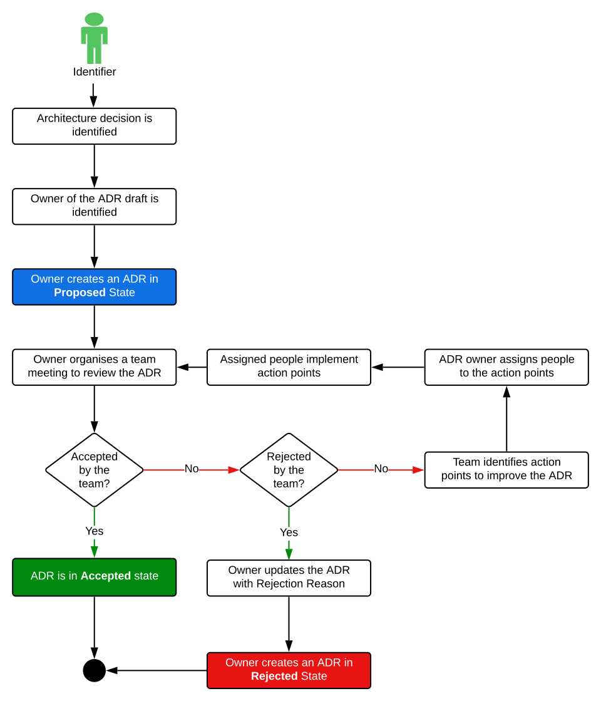

Introduction
Purpose
An Architectural Decision (AD) is a design choice that addresses a functional or non-functional requirement that is architecturally significant. This might, for instance, be a routing protocol choice (e.g., ospf vs bgp vs eigrp), a choice of the Infrastructure Device (e.g., Cisco vs. Arista), or a decision on features. Do not take the term “architecture” too seriously or interpret it too strongly. As the examples illustrate, any decisions that might have an impact on the architecture somehow are architectural decisions.
It should be as easy as possible to
- write down the decisions
- to version the decisions
There are debates what is an architecturally-significant decision and which decisions are not architecturally significant. Since we believe that any (important) decision should be captured in a structured way, we offer this ADR app to capture any decision.
Document Conventions
This document uses the following conventions.
| Abbreviation | Meaning |
|---|---|
| UX | User Experience (User Interface) |
| ADR | Architecture Design Records |
| MADR | Markdown Any Decision Records |
Intended Audience and Reading suggestions
This project is a prototype for and ADR app which will manage the creation, and management of Architecture Decision Records as described on the ADR
Project Scope
The purpose of this project is to build an application to capture Architecture Decisions in a lean format for later reference
Overall Description
Feature Perspective
This app will follow the MADR lean template to capture any decisions in a structured way. The template originated from capturing architectural decisions and developed to a template allowing to capture any decisions taken.

Characteristics
- Have a quick reference to understand what has been done in the past
- Allow us to share our thinking and methods with our stakeholders
- Maintain open and transparent communication inside and outside of our teams
Operating Environment and Dependencies
The initial operating environment for the ADR app is as below:
- PostgreSQL DB hosted
- Django as the UX dashboard
Entity Relationship Diagram
---
title: Architecture Decision Records ERD
---
erDiagram
DECISION_RECORD ||--|{ STATUS : contains
DECISION_RECORD ||--|{ APPROVERS : contains
DECISION_RECORD ||--|{ REVISION_HISTORY : contains
DECISION_RECORD {
UUID dr_id
UUID user_id
UUID stake_holder_id
UUID status_id
int dr_sequence
string dr_context
string dr_decision
datetime date_created
datetime date_updated
string workflow_payload
}
REVISION_HISTORY {
UUID history_id
UUID user_id
date date_of_revision
string name
}
STATUS {
UUID status_id
string status_name
}
APPROVERS {
UUID status_id
UUID user_id
date date_approved
}